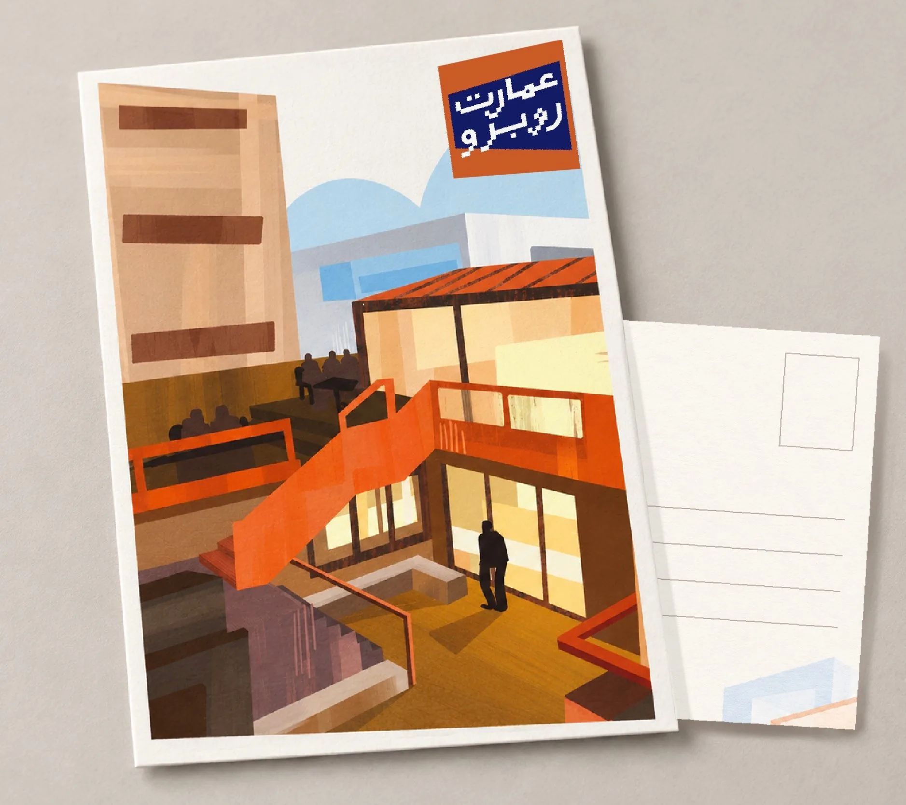

Illustration · Mini project
Postcards
Two places, painted as postcards.


Overview
A meadow and a building.
A small series of painted postcards. One opens onto a sunlit meadow under a huge, leaning old tree; the other looks down into Emarat-e Roobaroo, its orange stairs and glowing windows rendered in warm, textured layers.
- Role
- Illustration
- Format
- Postcard
- Pieces
- Two